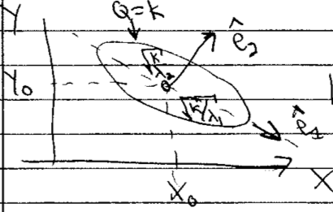
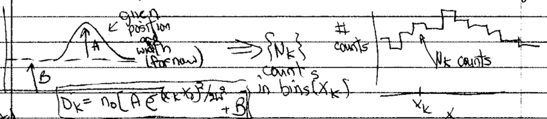

2.3. Lecture 6#
Likelihoods (or posteriors) with two variables with quadratic approximation#
{kind=link}
Find \(X_0\), \(Y_0\) (best estimate) by differentiating
To check reliability, Taylor expand around \(L(X_0,Y_0)\):
It makes sense to do this in (symmetric) matrix notation:
So in quadratic approximation, the contour \(Q=k\) for some \(k\) is an ellipse centered at \(X_0, Y_0\). The orientation and eccentricity are determined by \(A\), \(B\), and \(C\).
The principal axes are found from the eigenvectors of the Hessian matrix \(\begin{pmatrix} A & C \\ C & B \end{pmatrix}\).
What is the ellipse is skewed?
{kind=link}
Look at correlation matrix
Sivia example on “signal on top of background”#
See [SS06] for further details. The figure shows the set up:
{kind=link}
The level of the background is \(B\), the peak height of the signal above the background is \(A\) and there are \(\{N_k\}\) counts in the bins \(\{x_k\}\). The distribution is
Goal: Given \(\{N_k\}\), find \(A\) and \(B\).
So what is the posterior we want?
The actual counts we get will be integers, and we can expect a Poisson distribution:
or, with \(n\rightarrow N_k\), \(\mu \rightarrow D_k\),
for the \(k^{\text{th}}\) bin at \(x_k\).
What do we learn from the plots of the Poisson distribution?
which means that
Choose the constant for convenience; it is independent of \(A,B\).
Best point estimate: maximize \(L(A,B)\) to find \(A_0,B_0\)
Look at code for likelihood and prior
Uniform (flat) prior for \(0 \leq A \leq A_{\text{max}}\), \(0 < B \leq B_{\text{max}}\)
Not sensitive to \(A_{\text{max}}\), \(B_{\text{max}}\) if larger than support of likelihood
Table of results
Fig. # |
data bins |
\(\Delta x\) |
\((x_k)_{\text{max}}\) |
\(D_{\text{max}}\) |
|---|---|---|---|---|
1 |
15 |
1 |
7 |
100 |
2 |
15 |
1 |
7 |
10 |
3 |
31 |
1 |
15 |
100 |
4 |
7 |
1 |
3 |
100 |
Comments on figures:
Figure 1: 15 bins and \(D_{\text{max}} = 100\)
Contours are at 20% intervals showing height
Read off best estimates and compare to true
does find signal is about half background
Marginalization of \(B\)
What if we don’t care about \(B\)? (“nuisance parameter”)
\[ p(A | \{N_k\}, I) \int_0^\infty p(A,B|\{N_k\},I)\, dB \]compare to \(p(A | \{N_k\}, B_{\text{true}}, I)\) \(\Longrightarrow\) plotted on graph
Also can marginalize over \(A\)
\[ p(B | \{N_k\}, I) \int_0^\infty p(A,B|\{N_k\},I)\, dA \]Note how these are done in code:
B_marginalizedandB_true_fixed, and note the normalization at the end.
Set extra plots to true
different representations of the same info and contours in the first three. The last one is an attempt at 68%, 95%, 99.7% (but looks wrong).
note the difference between contours showing the pdf height and showing the integrated volume.
Look at the other figures and draw conclusions.
How should you design your experiments?
E.g., how should you bin data, how many counts are needed, what \((x_k)_{\text{max}}\), and so on.
Compare Gaussian noise sampling to lighthouse calculation#
Jump to the Bayesian approach in Parameter estimation example: Gaussian noise and averages II and then come back to contrast with the frequentist approach.
The goal is to sample a posterior \(p(\thetavec|D,I)\)
\[ p(\mu,\sigma | D, I) \leftrightarrow p(x_0,y_0|X,I) \]where \(D\) on the left are the \(x\) points and \(D\) on the right are the \(\{x_k\}\) where flashes hit.
What do we need? From Bayes’ theorem, we need
\[\begin{split}\begin{align} \text{likelihood:}& \quad p(D|\mu,\sigma,I) \leftrightarrow p(D|x_0,y_0,I) \\ \text{prior:}& \quad p(\mu,\sigma|I) \leftrightarrow p(x_0,y_0|I) \end{align}\end{split}\]You are generalizing the functions for log pdfs and the plotting of posteriors that are in notebook Radioactive lighthouse problem Key.
Note in Parameter estimation example: Gaussian noise and averages I the functions for log-prior and log-likelihood.
Here \(\thetavec = [\mu,\sigma]\) is a vector of parameters; cf. \(\thetavec = [x_0,y_0]\).
Step through the set up for
emcee.It is best to create an environment that will include
emceeandcorner.
Hint
Nothing in the
emceesampling part needs to change!More later on what is happening, but basically we are doing 50 random walks in parallel to explore the posterior. Where the walkers end up will define our samples of \(\mu,\sigma\) \(\Longrightarrow\) the histogram is an approximation to the (unnormalized) joint posterior.
Plotting is also the same, once you change labels and
mu_true,sigma_truetox0_true,y0_true. (And skip themaxlikepart.)
Analysis:
Maximum likelihood here is the frequentist estimate \(\longrightarrow\) this is an optimization problem.
Question
Are \(\mu\) and \(\sigma\) correlated or uncorrelated?
Answer
They are uncorrelated because the contour ellipses in the joint posterior have their major and minor axes parallel to the \(\mu\) and \(\sigma\) axes. Note that the fact that they look like circles is just an accident of the ranges chosen for the axes; if you changed the \(\sigma\) axis range by a factor of two, the circle would become flattened.
Read off marginalized estimates for \(\mu\) and \(\sigma\).